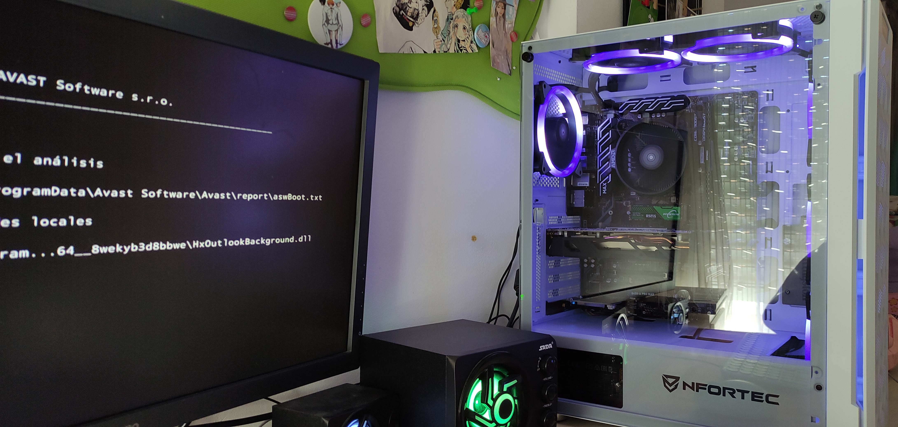
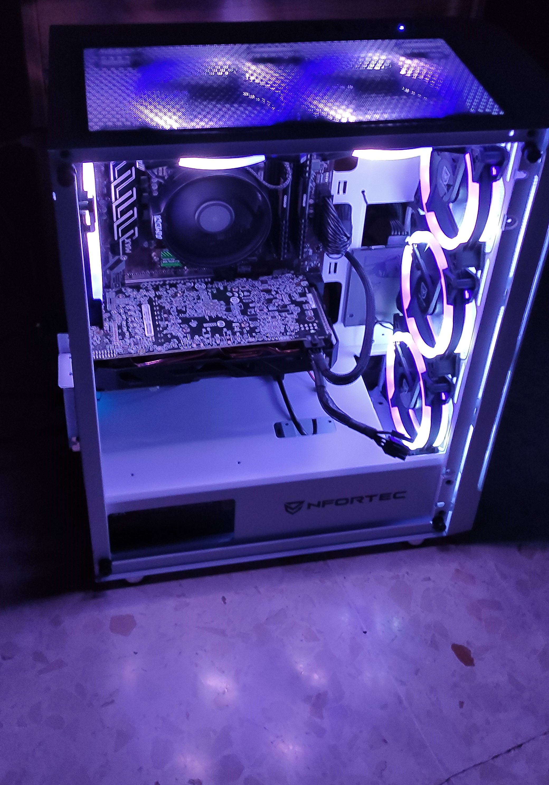
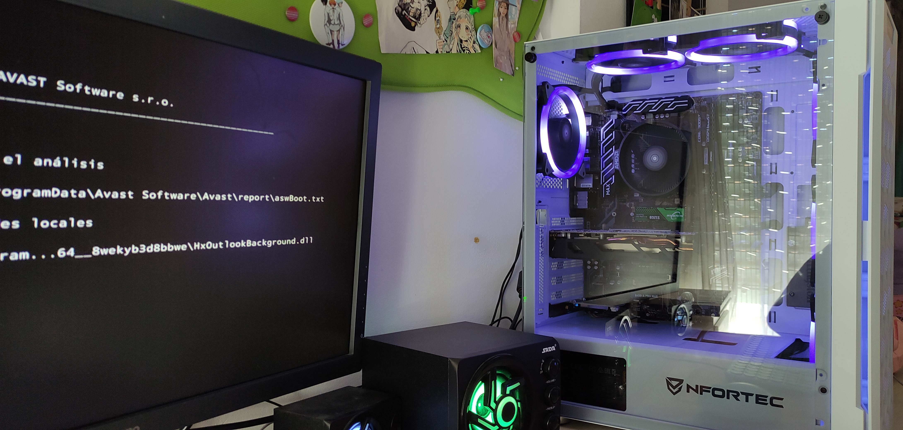
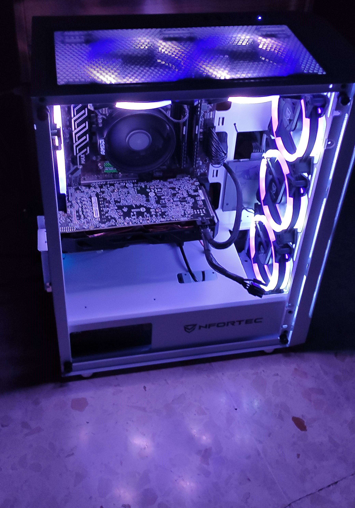

El rincon de mis piezas
Vitrina.


 



Sobre mi.
Desde que era un niño, siempre he tenido una fascinación por las cosas electronicas y los ordenadores en particular.
Recuerdo pasar horas desarmando y armando viejas computadoras, tratando de entender cómo funcionaban y mejorar sus capacidades. El poco dinero que tenía, lo gastaba en piezas obsoletas para poder tener mi propio equipo y no tener que sufrir las consecuencias de si algo salía mal...
Con el tiempo, seguí construyendo ordenadores para mí, o cualquier personade mi entorno que lo necesitara, así, como mejorar los equipos que caían em mis manos, detectando fallos o lo que se prestara.
Esa pasión me ha llevado a día de hoy a intentar aprender algo más de lo que me gusta y hacer el módulo de ASIR. No para dedicarme profesionalmente, pero si para sacarle más jugo a este mundo tan apasiónate.
Algunos Proyectos.
Todos los proyectos, siempre me han aportado algo.
Algunos, me han permitido tocar algunas piezas fuera del alcance de mi bolsillo. Otros, desafíos de como introducir tanto componente en una caja tan pequeña y que no reviente. Piezas construidas de forma artesanal, modificaciones en la caja (torres) incluso llevar al sitio alguna caja que no había lleva bien el transporte o el efecto de la gravedad… Aunque los portátiles me han permitido descubrir qué tipo de mascota tenían en casa, por los pelos acumulados en los disipadores.
Pero a estos les tengo especial cariño:
PC Cylon
Cuanto mas RGB mejor
Fue un ordenador con presupuesto muy ajustado, el cual tenía que cumplir muchos requisitos. Lo que hizo que tuviera que mirar muchos sitios para poder lograr los mejores precios. Hasta en 4 sitios distintos tuve que comprar los componentes. Lo mejor fue la cara de ilusión del que iba a ser su dueño.
Metamorfosis
No todo es RGB
Empezó con una compra compulsiva de una placa base extremadamente económica, que complementaria con otros componentes que tenia y alguna compra, para un proyecto de introducir en la carcasa de una consola XBOX 360 un PC completo con una grafía dedicada RX 570 4GB y tras muchas medidas y cortes, la cosa parecía que podía funcionar con una fuente externa. Pero no, al poner el equipo en funcionamiento y con las tapas medio abiertas, ya se veía que no recibía suficiente flujo de aire y los componentes se calentaban mas de lo deseado, para estar en reposo. Y con la APU 2400G, al final no era lo que quería. Así, que se trasformo en un PC pra un familiar.
Si las cosas no salen bien no te desanimes. Siempre hay una puerta abierta.
Pepinorum
Proyecto secreto
Un amigo quería un PC el aún tenía su viejo ordenador, del cual se hizo dos versiones casi iguales, con lo que cada uno queríamos. Pero aquella historia se convirtió en pesadilla y aunque al final la tienda entrego los componentes y los ordenadores se hicieron, el tiempo se esfumo y no fue el verano que esperábamos. Así que, con esa espina, decidí regalarle este PC personalizado, con una pieza 3D que me hizo un amigo para ampliar capacidades a la mini caja.
Contacto.
Do you want us to style your home? Fill out the form and fill me in with the details :) We love meeting new people!